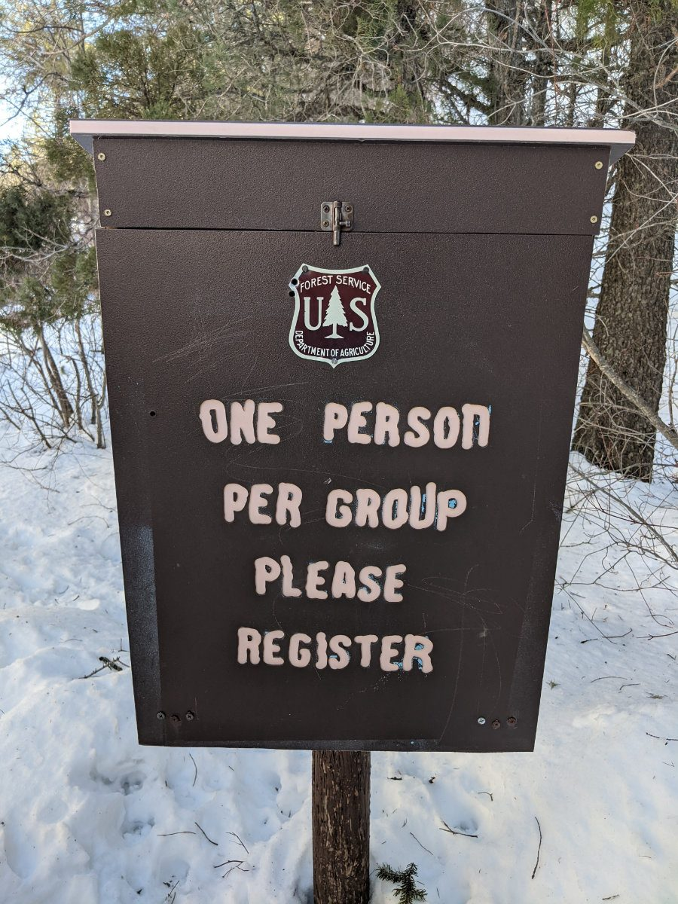

Winter Day Hike Along Lower Palisades Creek
Winter in Idaho can be tough for many reasons and the pandemic has only made it worse. The cold weather alone makes it hard to want to leave the house, so tacking on the social restrictions that come with this pandemic is pretty depressing. So, to curb our stir craziness, my partner and I went for a little winter day hike along Lower Palisades Creek and it did not disappoint.
Not long into the trail, you will encounter a United States Forest Service box that says “One Person Per Group Please Register”. If you open that up, you will see a notebook where people have been writing information for the group they’re hiking with that day. We just followed what other people did and wrote down one of our names, how many people were in our group, what time it was, and what our plan was; in this case, it was a day hike involving the two of us (and a puppy). Somewhere near the USFS box, there was also a sign that warned of bears. So, if you plan to go on this hike (especially all the way up to one or both of the lakes) you will want to have bear spray, maybe even bear bells, and generally make a good amount of noise as you move.
Location
If you’re in Eastern Idaho, this quick drive to the trailhead and a solid hike into nature and back is very feasible in one day. The hour-long drive from Idaho Falls is a scenic one with a couple of 6% grades and a good number of curves to help keep the drive interesting. Once we arrived, there wasn’t a ton of parking but that could have been because the snow had taken over - it seemed as if the snow had covered a road that goes right up to the trailhead. Perhaps when we visit again in the spring we will have a better lay of the land.
The Sights
My favorite part of this hike is that you're following the Palisades Creek the entire time. There are a few bridges that take you from one side to the other, and back. At some points, you wind up into the mountainside, but you can always hear the creek tumbling through the valley. We only got so far into this trail, but there are some pretty cool rocky peaks that you work your way up to and around. It is pretty impressive how steep the incline is from the creekbed upward. We didn't see any wildlife, besides other hikers' dogs on the trail, so that was one disappointment. I'm hoping all the little critters come out in the spring and summertime so I can make a trip back to the trail to pay them a visit.
Difficulty
On an early day in March, the beginning of the snowmelt is what made this hike as difficult as it was. When I was done, my knees were throbbing from the constant sliding and gathering my balance again. Also, if one of us took a step just a few inches off the path, your leg would sink all the way past your knees in the snow. Most of the time when this happens it’s pretty funny because it is unexpected and we were able to get up easily and keep going. However, if you’re not careful, there are some pretty narrow pathways on this hike with immediate dropoffs that could take you to a serious injury or worse if you’re not staying focused with your eyes on the trail. For this reason, it’s always important to stay attentive on the trail, for the safety of yourself and others. Speaking of "others" on the trail, even in the snow-covered conditions, we passed about a dozen different groups on our short day hike. When you have to get off to the side of the trail in these kinds of conditions, you definitely want to be careful.
Options
The great thing about this trailhead being just a short drive from town is that there are many different types of hikes you can do so you can keep going back if you feel you didn't see everything. It really has something for everybody. If you want to go for just a quick walk or jog in nature, you have a running water source and beautiful views to boot. If you’re looking for a complete day hike, you can get there early and hike your way to Lower Palisades Lake for a nice lunch, and hike your way out. Beyond that, this trail is a local gem for a backpacking trip all the way to the Upper Palisades Lake where people like to fish and camp for a night before heading back on the trail the next day. Heck, even if you don’t want to hike, the Palisades Creek Campground is just off to the side of the trailhead.

Even though this was just a short day hike, I highly recommend the Palisades Creek Trail. If this area wasn't marked as a campground and trailhead on the map, you would never know this little oasis was tucked back in this small valley, just off of Highway 26 near Swan Valley. I definitely plan to go back when all of the snow is gone. I think round two is going to be a day trip up to Lower Palisades Lake, and I'm sure that adventure is only going to tease me into making it to the Upper Palisades lake for an overnighter in the middle of the wilderness.